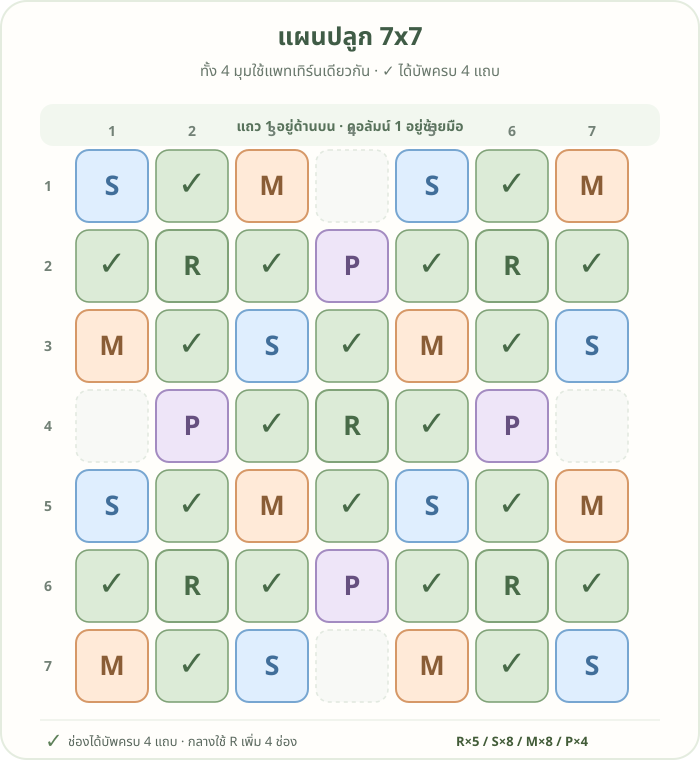

แผนปลูก Cash Town 7×7 · V4 Mirror
สะท้อนแถว 1–3 ลงมาเป็นแถว 7–5 และคงแถวกลางไว้ เครื่องหมาย ✓ คือช่องที่ได้รับบัพครบทั้ง 4 แถบ

อ่านรหัสต้นบัพ
พิกัดเขียนเป็น แถว, คอลัมน์ นับจากมุมซ้ายบน โดยเริ่มที่ 1
| รหัส | พืชบัพ | แถบที่ช่วย | จำนวน | ตำแหน่ง |
|---|---|---|---|---|
| R | ถั่วรันเนอร์ | ดิน | 4 | (2,2), (2,6), (6,2), (6,6) |
| S | สตรอว์เบอร์รี่สวน | น้ำ | 8 | (1,1), (1,5), (3,3), (3,7), (5,3), (5,7), (7,1), (7,5) |
| M | ดาวเรือง | ป้องกัน | 8 | (1,3), (1,7), (3,1), (3,5), (5,1), (5,5), (7,3), (7,7) |
| P | โบราจ | เกสร | 4 | (2,4), (4,2), (4,6), (6,4) |
โบราจตรงกลางที่ (4,4) ไม่จำเป็น เพราะช่อง ✓ ทั้งหมดได้เกสรจากโบราจที่แถว 2 หรือ 6 หรือจากแนวคอลัมน์ 2 หรือ 6 อยู่แล้ว
รวมต้นบัพ 24 ช่อง มีช่องที่ได้บัพครบ 16 ช่อง และช่องว่างอีก 9 ช่อง